Contents
- 1. What are Playlists?
- 2. Why YouTube playlists are useful?
- 3. Step#1: Choose the right videos
- 4. Step#2: Create the YouTube playlist from this video
- 5. Step#3: Give a title/name to your YouTube playlist
- 6. Step#4: Decide your reach with privacy settings on YouTube
- 7. Step#5: Create a playlist!
- 8. Step#6: Add videos
- 9. Write tempting titles and descriptions
- 10. Use a killer YouTube SEO strategy for your YouTube Playlist
- 11. Keep 4 to 8 videos in every playlist
- 12. Formulate an eye-catchy thumbnail as your YouTube Playlist cover
- 13. Use Alternate Layouts
- 14. Begin your YouTube playlists with your best creations
- 15. Use story telling feature
- 16. Add an intro
What are Playlists?
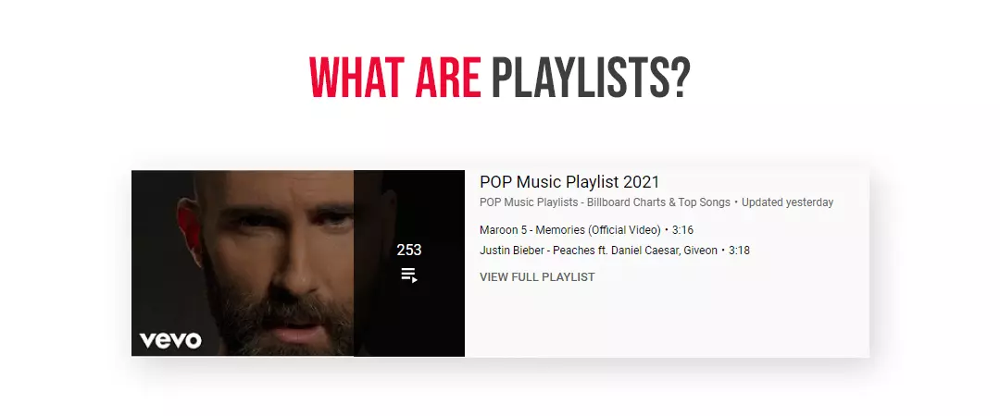
Playlists are a collection of similar or related videos organized by topic or theme. If a viewer watches a playlist, the interconnected videos in that playlist automatically play in sequential order.
You can use the playlist feature in two ways:
1. As a viewer
You can create a tailored list containing your favourite videos in YouTube playlists, curated other creator videos, or an amalgamation of both. The videos could be songs, great news rolls, yoga lessons, cooking tips, clips featuring you, and your friends, or any of the millions upon millions of videos on this enormous worldwide social media platform. And once lavished, it's very easy to add to, remove from, or edit a YouTube playlist. To see all your playlists just head to the library tab.
2. For video creators
For creators, playlists are an incredible tool to engage target audiences for a longer period of time. You can drag and drop videos to change their arrangement, change the public or private (or unlisted) status at any time, and rename the playlist as many times as you like.
Why YouTube playlists are useful?
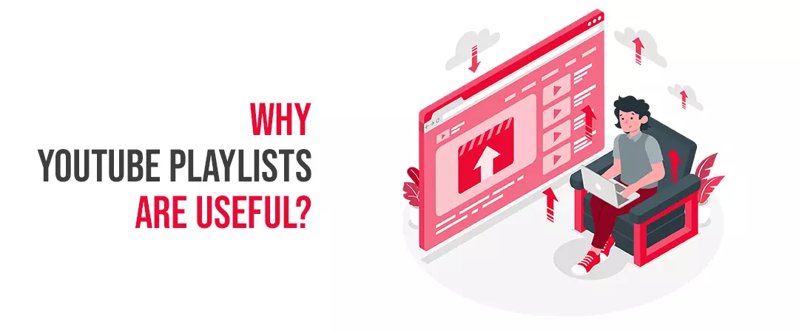
1. Help you curate the content into different categories
YouTube playlists are a great way to organize your videos and make it easier for the target audience to find videos related to a relevant topic they are interested in. You can use them to organize your channel homepage and index specific videos for visitors. That’s way, whenever someone new visits your channel page, they can effortlessly find the appropriate content for them.
2. Longer watch times
When you organize your videos in interesting sequences, the target audience will be more likely to watch your other videos. Hence, playlists can raise your watch time exponentially. In fact, YouTube itself states that: “Great playlists can keep viewers watching longer”. And the higher watch time gets; the more likely YT will promote your channel through search and appearing in recommended videos.
3. Increased search rankings
YouTube Playlists are a part of a killer video SEO strategy because they can rank for keywords that your target audience searches for. They emerge separately in search results from individual videos in both YouTube and Google results. You can also see them in the suggested video section and on your channel page. As playlists appear in search results separately, you can target new keywords by creating a playlist from your existing videos. For example, you have a beauty channel. You’ve got a video on how to do party make-up, and one on how to do different hairstyles. By creating a playlist for how to dress up for a party, you can target that keyword, without actually creating a new video on that topic.
4. Helps brands gain traction
Playlists are the decisive for YouTube marketing for small business. You can fascinate the target customers with multiple videos; like, listicles, unboxing videos, product reviews, product demonstrations, case studies or thought leader interviews that come together to tell a superior story as an alternative to engaging your customers with just a solitary video.
5. Better user experience
This practice also improves the customer experience because they don’t have to hunt around for more content.
6. Content curation
When your channel gets sorted with themed playlists it looks more professional and organized to your target audience.
7. Show your value
Having a bunch of playlists gives viewers an understanding of the value and type of content you provide.
Now let us understand, how to create playlist on YouTube channel
Step#1: Choose the right videos
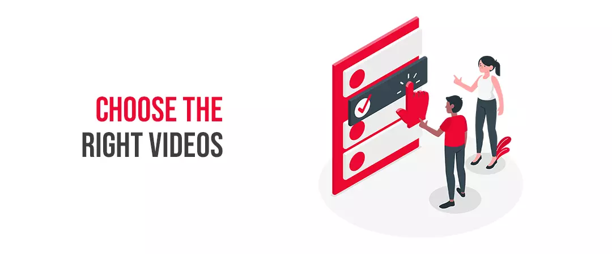
First of all, find a video for your YouTube playlist. When creating a playlist using your own content, click on your profile picture in the upper-right corner. On the drop-down menu that appears, select, “Your channel.” And, click “Your Videos.” You will now see all the videos you have uploaded to your channel. Then, click on your preferred video, and it will open on your screen.
Step#2: Create the YouTube playlist from this video
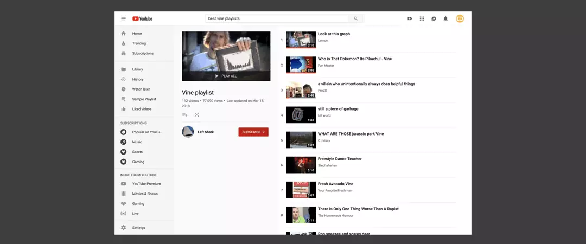
Keep your selected video prepared, click on the, “Add to,” button. It is three horizontal lines with a plus sign. After hitting this button, a menu will appear. Choose, “Create a new playlist.”
Step#3: Give a title/name to your YouTube playlist
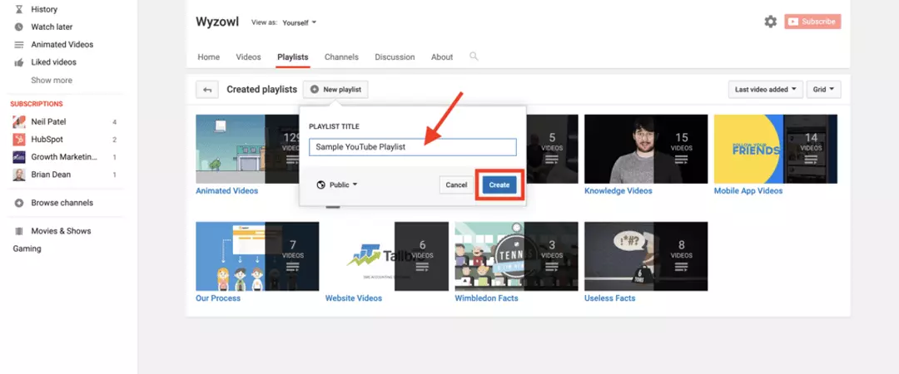
Select a YouTube playlist name that accurately defines your content, grabs viewers’ attention, and includes powerful keywords – the words your target audience are most likely to search for. Enter the title where instructed.
Step#4: Decide your reach with privacy settings on YouTube
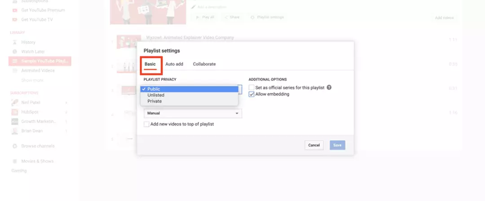
After you have termed your playlist, it’s time to select your privacy settings. This step simply confirms who on YT can see your videos. To head to the privacy settings, click on the drop-down arrow under the title/name section. You will see, three privacy options here. You can choose from either.
Public
If you want your videos to appear in search results by the algorithm, this is the best choice for you! Also, it works best if implementing a YouTube marketing strategy. This gives maximum exposure to your videos and channel.
Unlisted
Unlisted option is for those who don’t want their channel to appear in search results, but they can share it with friends, family, employees, and customers. For example, a channel with webinars may hide their content from competitors but share it with their prospects. They can send employees an unlisted link.
Private
This personalized viewing experience is for those creators who are creating playlists for personal use. These are the channels who don’t intend on sharing with anybody.
By clicking the last option, you get your work done for how to make YouTube playlist private.
Step#5: Create a playlist!
After adding your title and selecting YouTube privacy settings, hit the “Create,” button. Voila! you just created a playlist! To access it, go back to your channel homepage, and click on the, “Playlists,” tab. Here you can see all the playlists you’ve created.
Step#6: Add videos
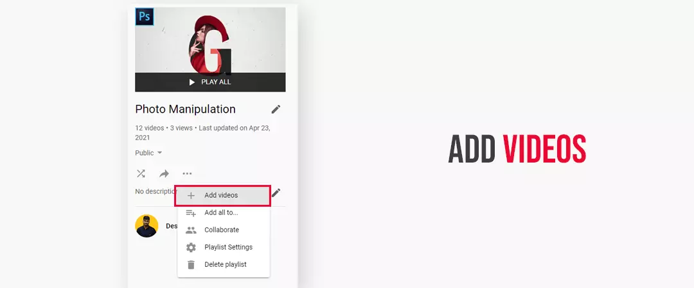
Add videos to your themed YouTube playlist. After successfully creating a playlist, it’s time to fill it with videos. To do this. Click the YouTube, “Save to,” button, the playlist you just created will appear. Just tick the box, and the video will be added to your playlist.
How to edit a YouTube playlist
- 1. Head to the playlist you’d like to edit in the Guide.
- 2. Click Edit by the section you’d like to modify.
How to delete a YouTube playlist
- 1. Go to one of your playlists.
- 2. Click the Menu .
- 3. Hit Delete playlist .
- 4. Approve that you want to delete your playlist by picking the Delete option.
YouTube playlists best practices
Put your banner of playlist high by implementing the right optimization:
1. Write tempting titles and descriptions
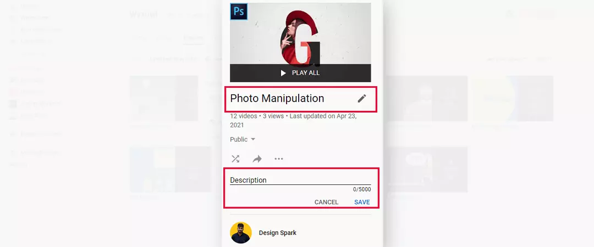
Title and description can leave a great impact on how your playlist performs. You must, create compelling titles that highlight the advantage a user can get from your playlist, like: “How to videos”. Then, write an irresistible description that supports your title and summaries why your playlist is worth watching.
2. Use a killer YouTube SEO strategy for your YouTube Playlist
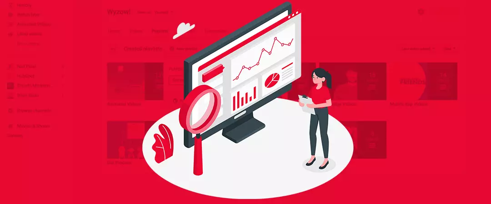
You must decorate your playlist title and description with powerful keywords. You can do keyword research using Google ads keyword planner or YouTube search suggests a feature. Keywords are the SEO boosters that help playlists rank in YouTube’s search results. Also, if you optimize your playlist around the keywords that your target audience search for, it can rank for those search terms, generating more views & conversions.
3. Keep 4 to 8 videos in every playlist
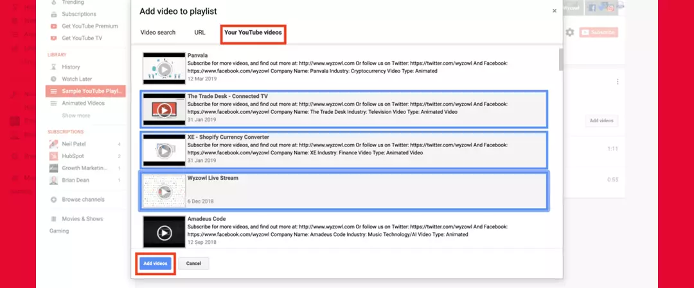
Don’t devastate your audience with a colossal playlist packed with 40 videos. If a user looks at a playlist with a truckload of videos in it, they’re going to leave it. Hence, stick to around 4-8 videos per playlist. This helps you to categorize only specifically related content and give users enough content to achieve the benefit you outline in your playlist title & description without crushing their interest with so many videos.
4. Formulate an eye-catchy thumbnail as your YouTube Playlist cover
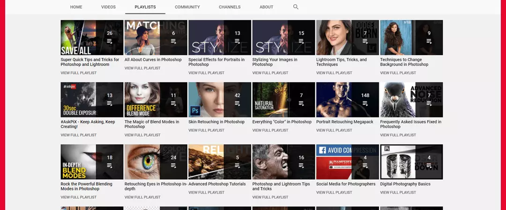
Thumbnails are the reduced-sized version of still images that let your target audience see a quick snapshot of your playlist as they're browsing YouTube. Just like an individual video, YT automatically produces a thumbnail next to your playlist when it shows up in the search results or in your channel’s “Playlists” tab. Thus, it is essential to add a custom thumbnail to your playlist.
5. Use Alternate Layouts
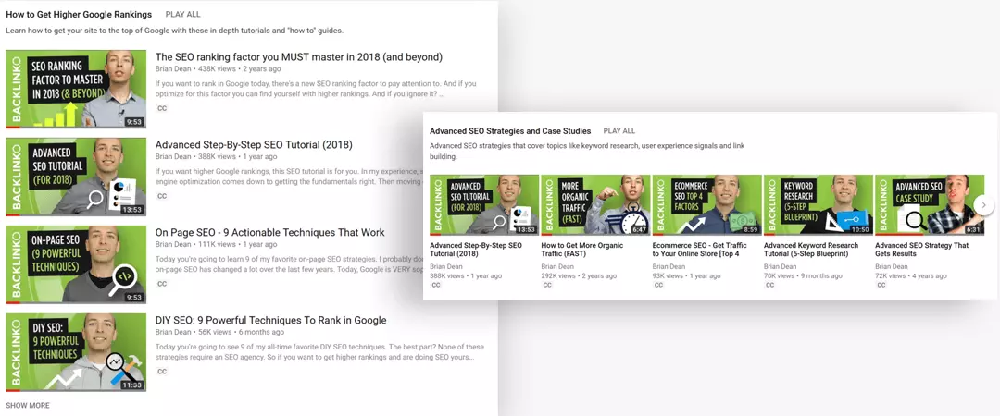
You can select to represent your playlists as a vertical or a horizontal list. As, using fully vertical or fully horizontal layouts isn’t very attention-grabbing. As a substitute, alternate vertical and horizontal on your YouTube Channel Page. It makes every individual playlist speak for itself.
6. Begin your YouTube playlists with your best creations
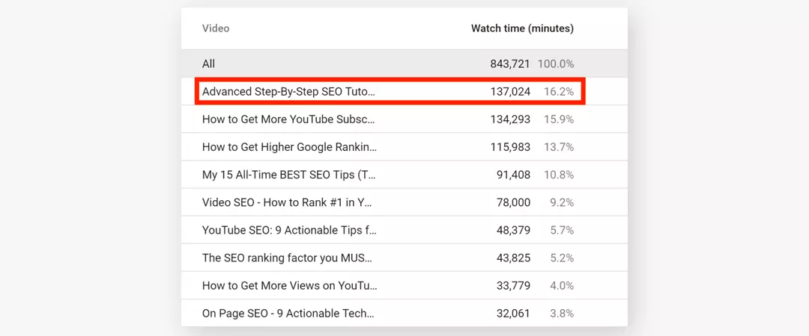
You can attain more target objectives out of your playlists by organizing your videos strategically. When you add a new video to a playlist, YouTube adds it to the lowest of the list. You can check out the stats on each video in that playlist using YouTube analytics. You must check videos with the Audience Retention, Watch Time or videos that convert the audience into loyal subscribers.
7. Use story telling feature
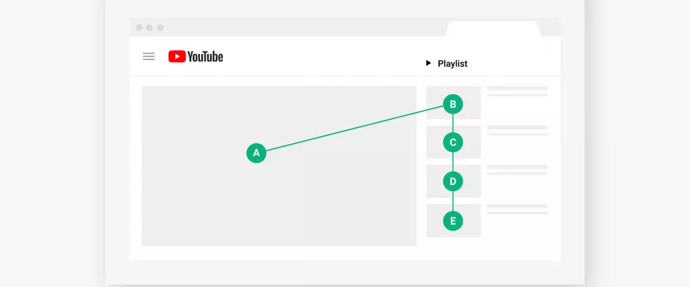
You can use surprising elements at the end of each video and relate/link it with the next related video of a particular topic or theme. Your target audience will undoubtedly binge-watch your content like a TV serial, therefore contemplate the order in which they play. To change the sequence of the videos in your playlist by navigating to it in your Video Manager and dragging each video into the desired position. You can also organize your videos by admiration or date added by clicking on your playlist settings.
8. Add an intro
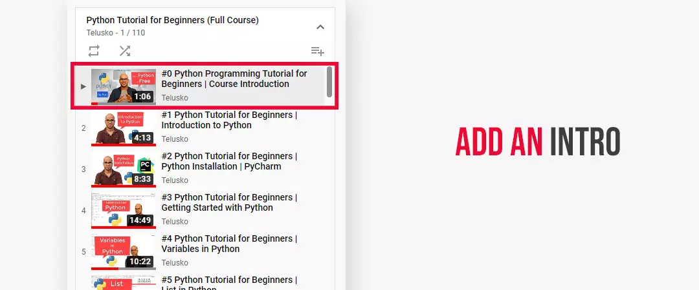
You can add an YouTube intro to your playlist to welcome viewers and offer different calls to action. I hope you understand how to create effective YouTube playlists.
Feel free to share!